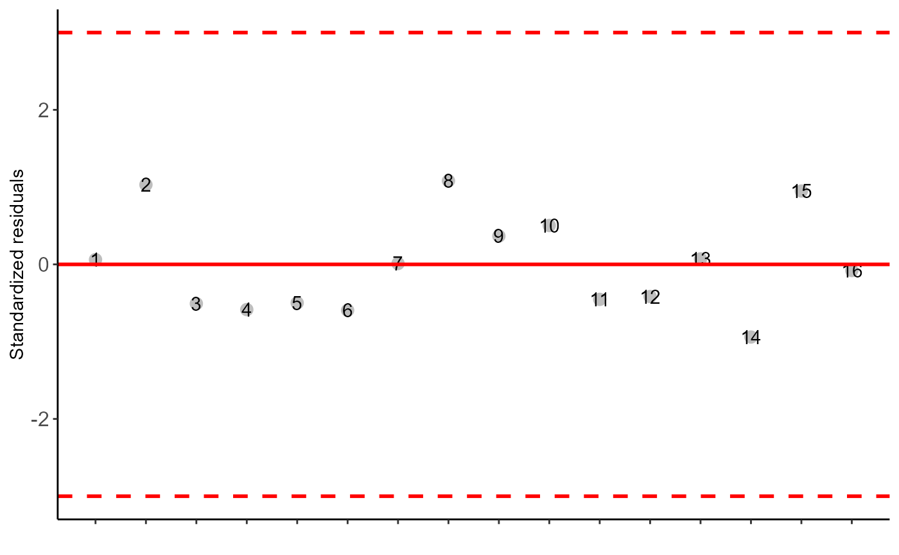
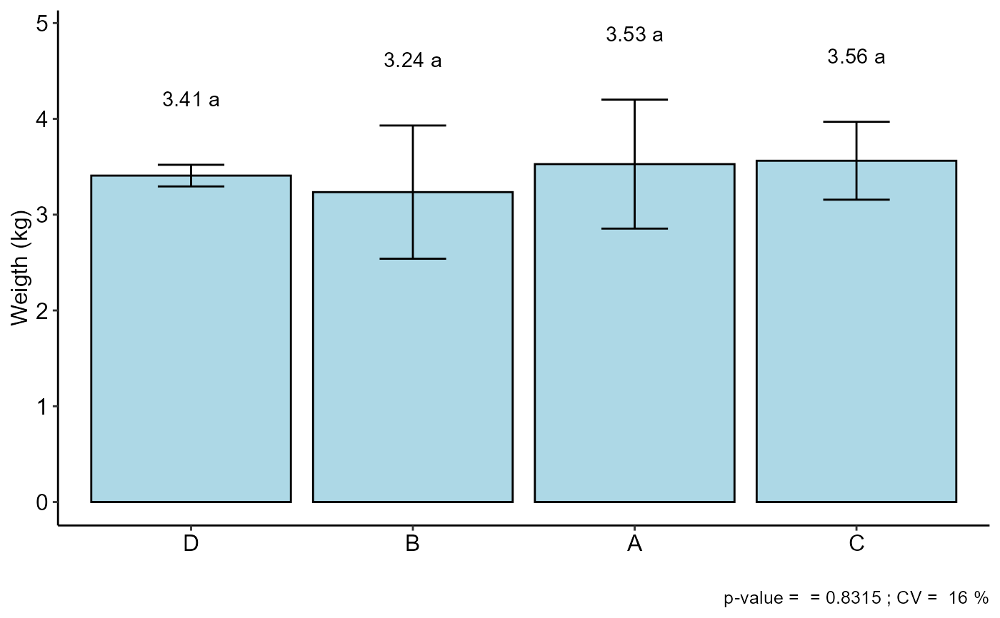

DQL.RdThis is a function of the AgroR package for statistical analysis of experiments conducted in Latin Square and balanced design with a factor considering the fixed model.
DQL(
trat,
line,
column,
response,
norm = "sw",
homog = "bt",
alpha.f = 0.05,
alpha.t = 0.05,
quali = TRUE,
mcomp = "tukey",
grau = 1,
transf = 1,
constant = 0,
geom = "bar",
theme = theme_classic(),
sup = NA,
CV = TRUE,
ylab = "Response",
xlab = "",
textsize = 12,
labelsize = 4,
fill = "lightblue",
angle = 0,
family = "sans",
dec = 3,
addmean = TRUE,
errorbar = TRUE,
posi = "top",
point = "mean_sd",
angle.label = 0
)Numerical or complex vector with treatments
Numerical or complex vector with lines
Numerical or complex vector with columns
Numerical vector containing the response of the experiment.
Error normality test (default is Shapiro-Wilk)
Homogeneity test of variances (default is Bartlett)
Level of significance of the F test (default is 0.05)
Significance level of the multiple comparison test (default is 0.05)
Defines whether the factor is quantitative or qualitative (default is qualitative)
Multiple comparison test (Tukey (default), LSD, Scott-Knott and Duncan)
Degree of polynomial in case of quantitative factor (default is 1)
Applies data transformation (default is 1; for log consider 0; `angular` for angular transformation)
Add a constant for transformation (enter value)
Graph type (columns, boxes or segments)
ggplot2 theme (default is theme_classic())
Number of units above the standard deviation or average bar on the graph
Plotting the coefficient of variation and p-value of Anova (default is TRUE)
Variable response name (Accepts the expression() function)
Treatments name (Accepts the expression() function)
Font size
Label size
Defines chart color (to generate different colors for different treatments, define fill = "trat")
x-axis scale text rotation
Font family
Number of cells
Plot the average value on the graph (default is TRUE)
Plot the standard deviation bar on the graph (In the case of a segment and column graph) - default is TRUE
Legend position
Defines whether to plot mean ("mean"), mean with standard deviation ("mean_sd" - default) or mean with standard error (default - "mean_se").
label angle
The table of analysis of variance, the test of normality of errors (Shapiro-Wilk ("sw"), Lilliefors ("li"), Anderson-Darling ("ad"), Cramer-von Mises ("cvm"), Pearson ("pearson") and Shapiro-Francia ("sf")), the test of homogeneity of variances (Bartlett ("bt") or Levene ("levene")), the test of independence of Durbin-Watson errors, the test of multiple comparisons (Tukey ("tukey"), LSD ("lsd"), Scott-Knott ("sk") or Duncan ("duncan")) or adjustment of regression models up to grade 3 polynomial, in the case of quantitative treatments. The column, segment or box chart for qualitative treatments is also returned. The function also returns a standardized residual plot.
The ordering of the graph is according to the sequence in which the factor levels are arranged in the data sheet. The bars of the column and segment graphs are standard deviation.
CV and p-value of the graph indicate coefficient of variation and p-value of the F test of the analysis of variance.
In the final output when transformation (transf argument) is different from 1, the columns resp and respo in the mean test are returned, indicating transformed and non-transformed mean, respectively.
Principles and procedures of statistics a biometrical approach Steel, Torry and Dickey. Third Edition 1997
Multiple comparisons theory and methods. Departament of statistics the Ohio State University. USA, 1996. Jason C. Hsu. Chapman Hall/CRC.
Ramalho M.A.P., Ferreira D.F., Oliveira A.C. 2000. Experimentacao em Genetica e Melhoramento de Plantas. Editora UFLA.
Scott R.J., Knott M. 1974. A cluster analysis method for grouping mans in the analysis of variance. Biometrics, 30, 507-512.
Mendiburu, F., and de Mendiburu, M. F. (2019). Package ‘agricolae’. R Package, Version, 1-2.
library(AgroR)
data(porco)
with(porco, DQL(trat, linhas, colunas, resp, ylab="Weigth (kg)"))
#>
#> -----------------------------------------------------------------
#> Normality of errors (Shapiro-Wilk
#> -----------------------------------------------------------------
#> Method Statistic p.value
#> Shapiro-Wilk normality test(W) 0.9183353 0.1585848
#>
#> As the calculated p-value is greater than the 5% significance level, hypothesis H0 is not rejected. Therefore, errors can be considered normal
#>
#> -----------------------------------------------------------------
#> Homogeneity of Variances
#> -----------------------------------------------------------------
#> Method Statistic p.value
#> Bartlett test(Bartlett's K-squared) 1.207666 0.7511662
#>
#> As the calculated p-value is greater than the 5% significance level, hypothesis H0 is not rejected. Therefore, the variances can be considered homogeneous
#>
#> -----------------------------------------------------------------
#> Independence from errors
#> -----------------------------------------------------------------
#> Method Statistic p.value
#> Durbin-Watson test(DW) 2.028993 0.2932159
#>
#> As the calculated p-value is greater than the 5% significance level, hypothesis H0 is not rejected. Therefore, errors can be considered independent
#>
#> -----------------------------------------------------------------
#> Additional Information
#> -----------------------------------------------------------------
#>
#> CV (%) = 16
#> MStrat/MST = 0.1
#> Mean = 3.4331
#> Median = 3.39
#> Possible outliers = No discrepant point
#>
#> -----------------------------------------------------------------
#> Analysis of Variance
#> -----------------------------------------------------------------
#> Df Sum Sq Mean.Sq F value Pr(F)
#> trat 3 0.2622187 0.08740625 0.2898586 0.8315413
#> line 3 0.1065687 0.03552292 0.1178019 0.9463594
#> column 3 1.4274687 0.47582292 1.5779347 0.2899683
#> Residuals 6 1.8092875 0.30154792
#>
#> As the calculated p-value is greater than the 5% significance level, H0 is not rejected
#>
#> -----------------------------------------------------------------
#> Multiple Comparison Test
#> -----------------------------------------------------------------
#> [1] "H0 is not rejected"
#>
#>

